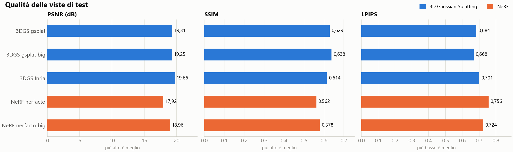
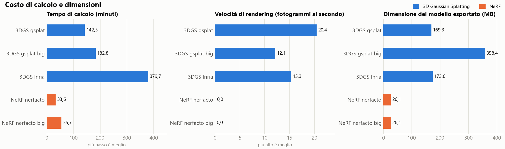
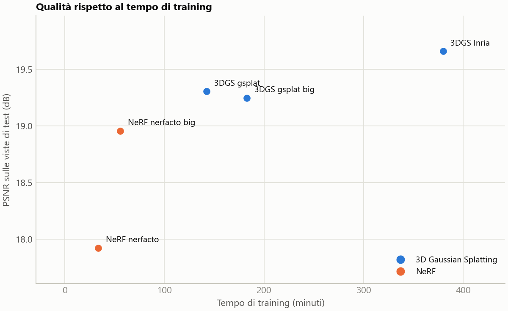
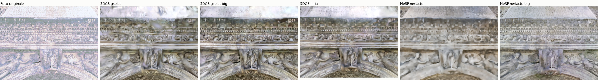
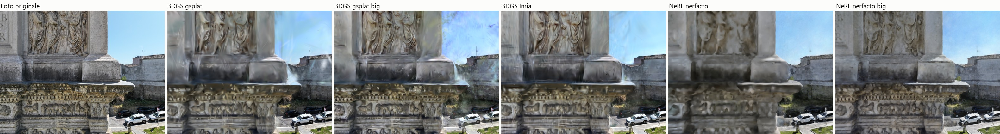
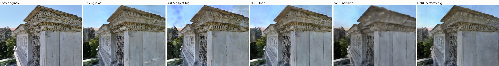

Confronto dei metodi di ricostruzione 3D — progetto «foto»
Generato il 22/10/2026 alle 00:53 con la versione 0.4.0. Tutti i metodi usano lo stesso allineamento delle camere, le stesse foto di training e di test e la stessa risoluzione; le metriche sono calcolate con lo stesso codice sulle viste escluse dal training.
Qualità

Costo

Qualità rispetto al tempo

Misure
| Metodo | Iterazioni | Training (min) | PSNR (dB) | SSIM | LPIPS | Rendering (fps) | Gaussiane / punti | Modello esportato (MB) |
|---|---|---|---|---|---|---|---|---|
| Gaussian splatting (gsplat, splatfacto) | 30.000 | 142,5 | 19,31 | 0,6289 | 0,6837 | 20,4 | 716.004 | 169,3 |
| Gaussian splatting, alta qualità (gsplat, splatfacto-big) | 30.000 | 182,8 | 19,25 | 0,6377 | 0,6677 | 12,1 | 1.515.439 | 358,4 |
| Gaussian splatting originale (Inria) | 30.000 | 379,7 | 19,66 | 0,6141 | 0,7014 | 15,3 | 734.068 | 173,6 |
| NeRF (nerfacto) | 30.000 | 33,6 | 17,92 | 0,5619 | 0,7557 | 0,0 | 1.014.087 | 26,1 |
| NeRF, alta qualità (nerfacto-big) | 30.000 | 55,7 | 18,96 | 0,5783 | 0,7242 | 0,0 | 1.015.428 | 26,1 |
Il tempo di training è la durata dell'intero comando, caricamento dei dati incluso. La velocità di rendering è misurata sulle viste di test, alla risoluzione indicata sotto. La tabella completa di tutti i run è in confronto.csv.
Non inclusi, perché fatti in condizioni diverse (risoluzione, iterazioni, correzione delle pose o aspetto per foto): Gaussian splatting originale (Inria) del 2026-10-22; Gaussian splatting (gsplat, splatfacto) del 2026-10-22; Gaussian splatting originale (Inria) del 2026-10-21; Gaussian splatting (gsplat, splatfacto) del 2026-10-21; Gaussian splatting originale (Inria) del 2026-10-21; Gaussian splatting (gsplat, splatfacto) del 2026-10-21; Gaussian splatting originale (Inria) del 2026-10-21; Gaussian splatting (gsplat, splatfacto) del 2026-10-21; NeRF (nerfacto) del 2026-10-21. Sono nella tabella completa.
Foto lette dal disco durante il training (non entravano in memoria): Gaussian splatting (gsplat, splatfacto); Gaussian splatting, alta qualità (gsplat, splatfacto-big); Gaussian splatting originale (Inria); NeRF (nerfacto); NeRF, alta qualità (nerfacto-big). Il loro tempo di training include la lettura.
Viste di test a confronto



Differenze di processo
| 3D Gaussian Splatting | NeRF | |
|---|---|---|
| Rappresentazione | Insieme esplicito di gaussiane 3D con posizione, forma, opacità e colore dipendente dalla direzione | Campo di radianza continuo codificato in una rete neurale |
| Punto di partenza | Nuvola sparsa dell'allineamento | Solo le pose delle camere |
| Ottimizzazione | Discesa del gradiente sui parametri delle gaussiane, con aggiunta e rimozione durante il training | Discesa del gradiente sui pesi della rete, campionando raggi dalle immagini |
| Rendering | Rasterizzazione, in tempo reale | Volumetrico lungo ogni raggio, non in tempo reale |
| Risultato | File .ply di gaussiane, modificabile (pulizia, ritaglio) e pubblicabile sul web | Pesi della rete; esportabile come nuvola di punti campionata |
| Geometria | Implicita nelle gaussiane; nessuna superficie | Densità volumetrica; superfici solo per estrazione |
Condizioni dell'esperimento
| Condizione | Valore |
|---|---|
| Foto allineate | 887 su 887 |
| Errore medio di riproiezione (px) | 1,07 |
| Foto di training / di test | 776 / 111 |
| Risoluzione delle immagini valutate | 5279 × 3955 px |
| Correzione delle pose (metodi nerfstudio) | no |
| Aspetto per foto (NeRF) | no |
| Scheda grafica | NVIDIA RTX A6000 |
| Versione di app | 0.4.0 |
| Versione di nerfstudio | 1.1.5 |
| Versione di gsplat | 1.4.0+pt24cu124 |
| Versione di torch | 2.4.1+cu124 |
| Versione di tinycudann | 2.0 |
| Versione di colmap | 4.2.1 |
| Versione di gaussian-splatting-inria | 54c035f783 |
Ogni configurazione è stata eseguita una volta: le differenze piccole tra metodi possono rientrare nella variabilità tra esecuzioni ripetute, che qui non è stimata.